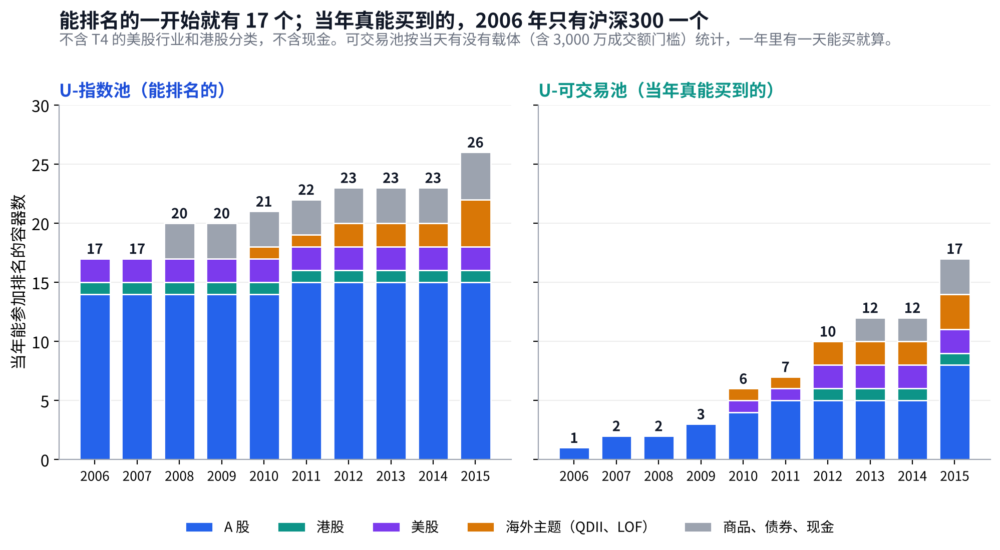
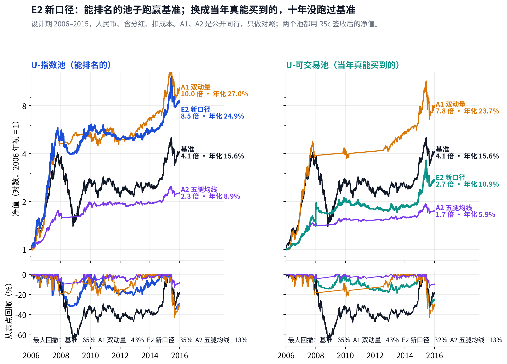
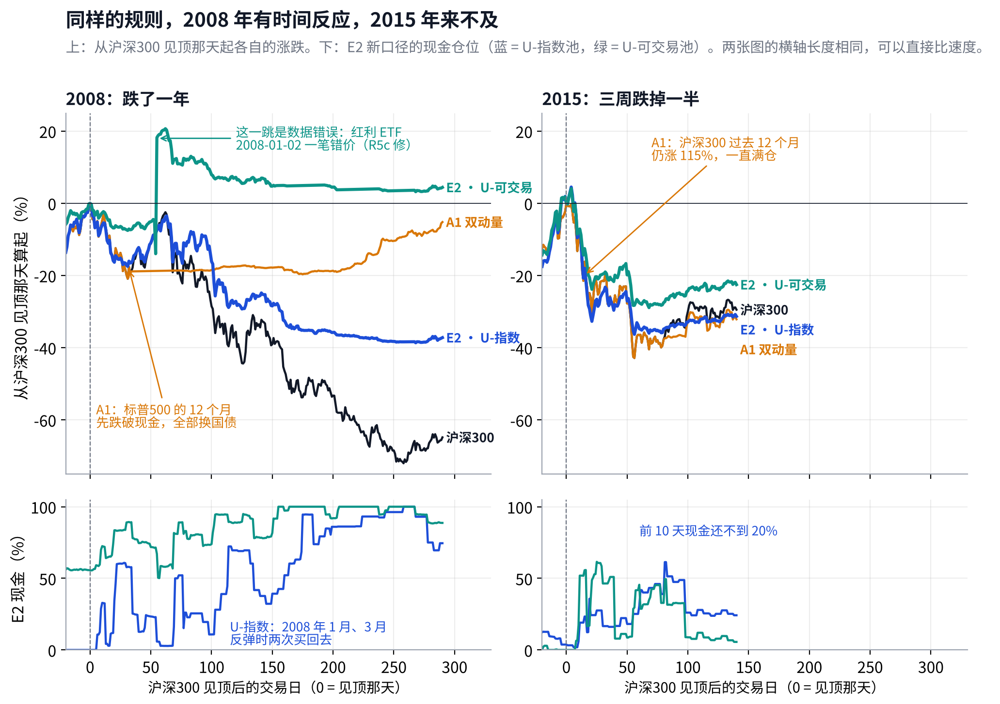
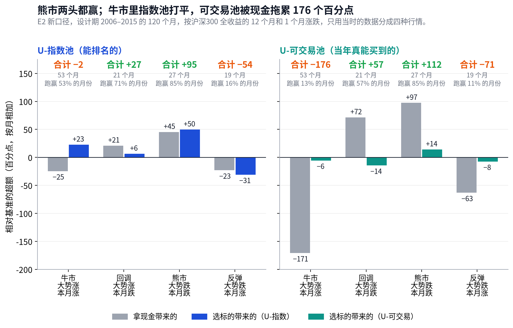
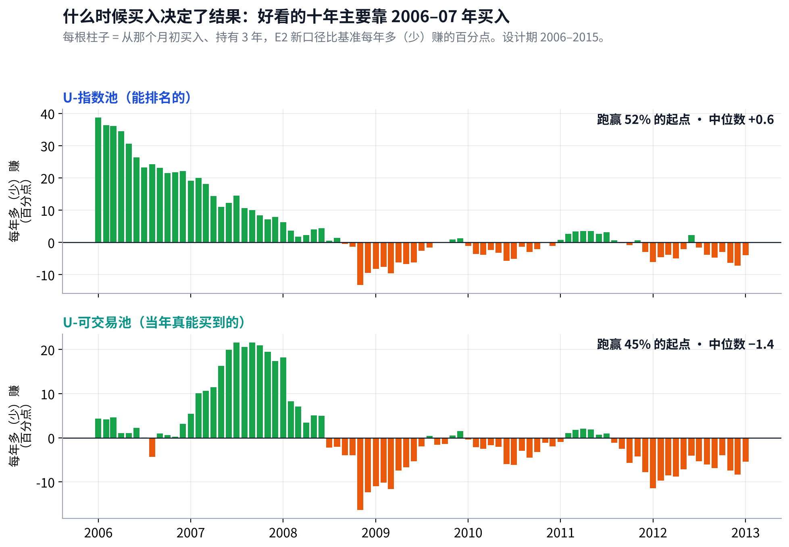
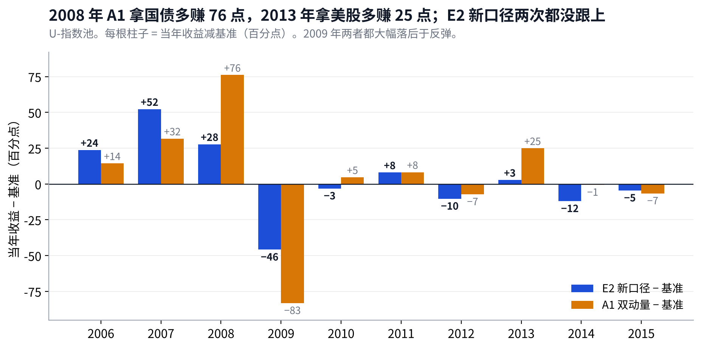
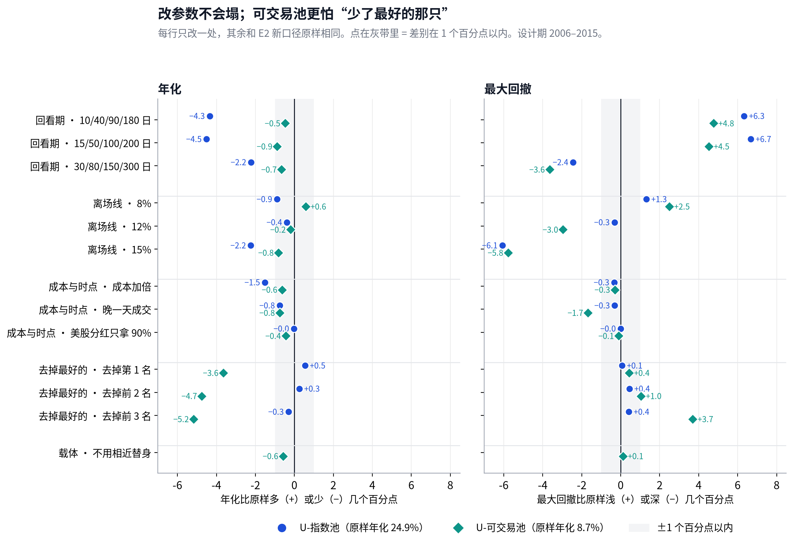

v4 体检报告
能排名时稳稳跑赢基准，换成当年真能买到的就没跑过
项目愿景 在动态周期内，从多类资产里选出 Top N 强势 ETF 轮动持有，获得超额收益、稳定跑赢被动基准，同时把回撤控制住。
年化、回撤都从 2006-01-01 算到 2015-12-31（程序从 2005 年开始跑，前一年只用来攒历史）。前五年 = 2006–2010，后五年 = 2011–2015。2016 年以后的收益一律没有算。
00两个池子：有什么、差在哪、为什么要两个
U-指数池回答“这套选法好不好”，U-可交易池回答“当年真能赚到多少”。2006 年两者差 16 个容器，到今天几乎一样多。

| U-指数池 | U-可交易池 | |
|---|---|---|
| 回答的问题 | 选法本身好不好 | 当年真能赚到多少 |
| 谁能参加排名 | 有指数历史就能 | 当天有能买的基金才能（场内 ETF → 场外指数基金 → 相近替身） |
| 2006 年 | 17 个 | 1 个（只有沪深300） |
| 2015 年 | 26 个 | 17 个 |
| 用来做什么 | 过关判定 | 看真实收益；以后的模拟盘就是它 |
每一年各有哪些容器，见《数据看板》。
- 为什么不只用可交易池：2006–2011 年能买的只有 1–7 个，选法再好也没得选，结论会被“当年没有产品”主导，看不出规则本身的好坏。
- 为什么不只用指数池：它会高估当年能赚到的。2006 年境内投资者买不到美股、港股和行业指数，指数池却当作能买。
01过关：四个改进都没过，v4 最终版就是 E2 新口径
修复后重算，结论不变：四个都没过。T2 又是最接近的，两段都更好，但它要改善的回调行情没变好。
过关要同时满足三条（预注册写死，跑之前定的）：前五年、后五年的年化超额都比 E2 新口径高；它瞄准的那种行情（表里带 ◎ 的格子）确实变好；熊市不比 E2 新口径差 10 个百分点以上。
| 版本 | 改的一处 | 前五年 年化超额 | 后五年 年化超额 | 牛市 | 回调 | 熊市 | 反弹 | 结果 |
|---|---|---|---|---|---|---|---|---|
| E2 新口径 | （参照） | +19.6 | +0.5 | −2.4 | +27.3 | +95.0 | −54.0 | 参照 |
| T1 | 转折点换挡 | +22.6 | −1.0 | +0.1 | +25.6 | +91.3 | ◎ −47.1 | 没过后五年变差 |
| T2 | 按市场状态分配速度 | +20.1 | +1.5 | +8.0 | ◎ +25.1 | +96.2 | −56.9 | 没过回调没变好 |
| T3 | 空位当天补 | +19.6 | +0.3 | ◎ −0.3 | +24.8 | +94.2 | −53.5 | 没过后五年变差 |
| T4 | 加美股行业、港股分类 | +11.1 | −0.3 | ◎ −58.1 | +35.8 | +112.8 | −59.6 | 没过三处都差 |
| 公开同行：同一张表的算法，只做对照，不参加过关 | ||||||||
| A1 双动量 | 三选一 | +19.8 | +4.1 | −62.2 | +59.3 | +147.2 | −57.7 | 两段都更好 |
| A2 五腿均线 | 各 1/5，跌破均线拿现金 | −7.8 | −5.9 | −231.2 | +96.0 | +132.7 | −78.8 | 两段都更差 |
U-指数池。年化超额 = 相对基准每年多赚几个百分点；四种行情 = 该行情所有月份相对基准的超额相加（百分点），越大越好。绿 = 比 E2 新口径好，橙 = 更差，只给关键格子上色。Reviewer 用独立程序复算，逐列一致。
- 修好以后 E2 新口径自己变强了：后五年从每年少赚 2.4 个百分点变成多赚 0.5，熊市从 +91 到 +95，主要是 2008 年起真能买到国债和黄金。
- T2 两次都差在同一处：两段都更好（+20.1、+1.5），但回调行情 +25.1 低于 +27.3。冻结的规则就是没过，不能事后放宽。
- T1 前五年最好（+22.6），2009 年反弹多赚了，但 2011、2014 年来回换挡，后五年变成少赚。规则要求两段都更好，就是为了挡住“一段大赢、盖住另一段变差”。
02性格：跟着大趋势走，池子小的时候大半仓位在现金
能排名时年化 24.9%；当年真能买到的只有 8.7%，十年没跑过基准的 15.6%。

| U-指数池 | U-可交易池 | 基准 | |
|---|---|---|---|
| 年化 | 24.9% | 8.7% | 15.6% |
| 最大回撤 | −35% | −32% | −66% |
| 年化波动 | 18.4% | 10.4% | 23.2% |
| 上涨月份跟到 | 86% | 42% | 100% |
| 下跌月份只跟 | 52% | 37% | 100% |
| 每年换手 | 约 15 次 | 约 8 次 | — |
为什么可交易池差这么多 E2 每个回看组取前 N 名、每名 1/N。2006 年能买的只有沪深300 一样（场外指数基金），N = 3、5、8 平均下来，一只最多放约 22%，其余全是现金。所以 2006 年沪深300 涨了一倍多，可交易池只赚 19%，全年平均 80% 是现金。A1 一次拿一样、100% 仓位，同样只有沪深300 可买，2006 年赚了 92%。这是 E2 规则本身的设计：它假设总有好几个强者可以分。
2.1 为什么 2008 年控制住了回撤，2015 年没有

2007 年底沪深300 过去 12 个月还涨 180%，A1 看沪深300 是不会走的。触发它的是标普500：12 个月收益先跌破现金（次贷危机先爆发），A1 的总开关关上，换成国债（可交易池里国债买不到，就拿现金）。2015 年标普500 过去 12 个月仍 +6%、沪深300 +115%，开关没动，A1 满仓扛完整个股灾，回撤 −43%，和沪深300 一模一样。它 2008 年的好成绩，很大一部分是时机碰巧。
2008 年 −32%：2007 年 11 月先亏 16%，2008 年 1–2 月小盘反弹时又几乎满仓买回去（现金 3%），之后又亏了几轮，7 月以后才大半撤到现金和国债，此后沪深300 又跌了一半它没事。
2015 年见顶时 100% 仓位在涨得最猛的中证1000、全指工业、通信、信息技术、中证500（动量规则天然选涨得最快、也是波动最大的）。前 10 个交易日就亏了 20%，等离场卖出、现金升到一半时，损失已经发生；7 月反弹又买回，8–9 月第二波跌到 −35%。
2008 年只能买沪深300 和红利两样，每样最多约 22%，大半仓位天然在现金，这一年收益 −10.7%，回撤约 −15%，不是躲得好。2015 年能买的多了、满仓，回撤就到了 −32%。
能不能修 阴跌靠“跌 10% 就卖”和长回看期，已经有；急跌只能看波动：2015 年 5 月底中证1000 近 20 天的波动已是 250 天的 1.7 倍。这就是 v5 的部件“按波动调仓”（见《v5 研究备忘》第 2 节）。v4 不改。
03四种行情：熊市两头都赢，牛市里可交易池输给了现金
修好后，指数池的熊市超额一半来自拿现金、一半来自选对国债和黄金；牛市里可交易池少赚 176 个百分点，只有 13% 的月份跑赢。
四种行情按沪深300 全收益在每个月末只用当时的数据划分：过去 12 个月涨、这个月也涨 = 牛市；12 个月涨、这个月跌 = 回调；12 个月跌、这个月也跌 = 熊市；12 个月跌、这个月涨 = 反弹。

| 行情 | 月数 | U-指数池 | U-可交易池 | 读法 | ||
|---|---|---|---|---|---|---|
| 合计 | 跑赢月份 | 合计 | 跑赢月份 | |||
| 牛市 | 53 | −2 | 53% | −176 | 13% | 指数池选得好（+23），被现金拖累抵掉（−25），基本打平。可交易池能买的太少，钱大多在现金里。 |
| 回调 | 21 | +27 | 71% | +57 | 57% | 拿现金和 10% 离场在起作用，两个池子都赢；可交易池这一格的选标的是 −14。 |
| 熊市 | 27 | +95 | 85% | +112 | 85% | 指数池现金 +45、选标的 +50（国债、黄金）；可交易池几乎全靠现金。 |
| 反弹 | 19 | −54 | 16% | −71 | 11% | 大跌之后慢的组还没转正，钱还在现金和国债里；指数池选标的也是 −31，拿着的防守资产在反弹里涨得慢。 |
合计 = 该行情所有月份相对基准的超额相加（百分点）。拿现金 = 因为没满仓而少赚或少亏的部分；选标的 = 持有的那几只和基准相比的差。数字来自 D25-8 之后的设计期简报。
04任意起点：指数池持有 5 年，三分之二的时候跑赢
指数池持有 5 年跑赢基准的起点占 65%；可交易池只有 32%。好看的十年仍主要靠 2006–07 年买入。

图上的比例和中位数是我按简报同一方法算的，可交易池和简报差不到 1 个百分点（起点日期取法不同）。
≥ 60%< 60%跑赢的起点按期望线 60% 上色（期望线见上图和“期望”一节）
| 持有 5 年（60 个起点），对照 | U-指数池 | U-可交易池 | ||||
|---|---|---|---|---|---|---|
| 跑赢的起点 | 中位数 | 最差 | 跑赢的起点 | 中位数 | 最差 | |
| 基准 | 65% | +4.3 | −6.1 | 32% | −3.0 | −11.3 |
| 沪深300 | 93% | +8.8 | −3.2 | 58% | +1.7 | −18.8 |
| 标普500 | 50% | −0.2 | −14.4 | 43% | −2.3 | −18.3 |
| 纳指100 | 32% | −4.7 | −19.5 | 23% | −7.2 | −23.7 |
| A1 双动量（同池） | 12% | −2.7 | −9.9 | 0% | −7.3 | −23.5 |
| A2 五腿均线（同池） | 73% | +2.2 | −4.7 | 35% | −0.5 | −2.9 |
中位数和最差 = 持有期内每年比对照多（少）赚的百分点。数字来自 D25-8 之后的设计期简报。指数池的最差起点是 2008 年 11 月，正好错过 2009 年的大反弹；可交易池的最差起点是 2006 年 1 月。
- 比沪深300 好得多，比美股差：这十年美股是慢牛，A 股大起大落，E2 主要在 A 股的大起大落里赚钱。
- 可交易池持有 5 年只有 32% 的起点跑赢基准。要注意，基准里那 30% 美股在 2012 年以前境内也买不到，这个比较对可交易池偏严。
05和公开同行比：复杂的规则没有跑过三选一
指数池里 A1 年化 27.0%、我们 24.9%，差距缩小了；可交易池里 A1 23.7%、我们 8.7%，差距很大。

| 十年年化 · 最大回撤 | E2 新口径 | A1 双动量 | A2 五腿均线 | 基准 |
|---|---|---|---|---|
| U-指数池 | 24.9% · −35% | 27.0% · −43% | 8.9% · −13% | 15.6% · −66% |
| U-可交易池 | 8.7% · −32% | 23.7% · −43% | 5.9% · −13% | 15.6% · −66% |
绿、橙相对同池的 E2 新口径。
A1 为什么更好
这是两个池子差距的主因。可交易池里 2006–07 年只有沪深300 能买，A1 100% 拿着，两年 +92%、+103%；E2 每只最多 22%，只赚 +19%、+30%。指数池里 2013 年 A1 改拿美股，+30% 对 E2 +10%。
2008 年 A1 指数池 +16%。这一条修好后 E2 也有了：2008 年平均拿 16% 国债，−32% → −23%，熊市超额里有一半来自选对防守资产。所以这一块的差距大部分是我们的程序问题，不是规则问题。
2015 年满仓扛完股灾（−43%）；2009 年反弹比基准少赚 83 个百分点，比我们还慢；牛市合计 −62；可交易池里 2008–2012 年国债买不到，只能拿现金，五年几乎没涨。
- 同行只用来诊断，不决定过不过（三层对照的第二层）。它说明：在这十年里，E2 多出来的复杂度还没有换来更好的结果，尤其是在能买的东西很少的时候。
- 要谨慎：A1 是一条出名的规则，我们挑它当同行时就知道它出名；它 2008 年的好成绩有时机碰巧的成分（第 2.1 节）。一个市场、一段十年的胜出，不代表以后也胜出。
06两个年代：前五年是主场，后五年指数池刚好打平
后五年指数池年化 9.9%、基准 9.4%，几乎打平；可交易池 7.4%，没跑过。
| 年代 | E2 | 基准 | A1（指数 / 可交易） | A2（指数 / 可交易） | 读法 | |
|---|---|---|---|---|---|---|
| U-指数池 | U-可交易池 | |||||
| 2006–2010 | 41.9% | 10.0% | 22.3% | 42.1% / 33.8% | 14.5% / 9.0% | 前五年是趋势策略的主场 |
| 2011–2015 | 9.9% | 7.4% | 9.4% | 13.4% / 14.4% | 3.5% / 3.0% | 后五年能买的多了，趋势却短了 |
| 2016–2020 | 留空封板后的一次性检验才看 | |||||
| 2021–2026 | 留空同上 | |||||
- 前五年是趋势策略的主场：2006–07 年大牛、2008 年大熊，都是一口气走到底的单边市。但这时能买的几乎只有沪深300，可交易池吃不到。
- 后五年能买的多了，趋势却短了：2010–13 年横盘，2014–15 年快牛快熊。池子变大的好处，被行情的变化抵掉了。
- 适应性：结果跟年代和池子大小走。2016 年以后池子会更大（多是海外主题），这十年的结论不能直接外推。
07改参数会不会塌：不会塌，但对回看期比第 2 版看到的敏感
换邻近的回看期，指数池少 2.2–4.5 个百分点；可交易池去掉最好的一只就少 3.6 个点。所有改动都仍跑赢基准的 15.6%（指数池）。

换成短一些的组合，回撤浅 6 个多点，但年化少 4 个多点；长一些的少 2.2。现在这组 20/60/120/250 是 v3 时就定下的，没有在这次调过，但它明显偏好，要当作“可能偏乐观”的信号记下。
8%、12% 离场线差 1 个点以内；15% 少 2.2 个点、回撤深 6 个点。成本加倍少 0.6–1.5 个点。美股分红只拿 90% 几乎没影响。
收益少 0.8 个点，回撤略深。修正前可交易池这一格是 −2.9，里面有那笔错价。
指数池去掉最好的一只反而略高，不靠明星。可交易池能买的少，去掉最好的一只少 3.6 个点、前三名少 5.2 个点，靠的是少数几只。
每项只改一处，其余和 E2 新口径原样相同。数字是相对原样的变化，自 2006 年算。
08对照期望备忘：指数池过了两条，可交易池过了一条
修好后，指数池“持有 5 年多数时候跑赢”达到了（65%）；两个池子都没达到“最差的 5 年不太差”。
| 期望（草稿） | 线 | U-指数池 | U-可交易池 |
|---|---|---|---|
| 任意起点持有 5 年，跑赢基准的比例 | ≥ 60% | 65%达到 | 32%没达到 |
| 最差的 5 年，每年比基准少赚 | 不超过 3 个百分点 | 6.1没达到 | 11.3没达到 |
| 最大回撤不超过基准的 | 0.6 倍 | 0.54 倍达到 | 0.48 倍达到 |
- 这三条是草稿，按约定等设计期结果出来后校准、封板前由你定稿。现在先如实对照，不改线去迁就结果。
- 和 v3 冻结的 P1 比：持有 5 年跑赢基准，P1 是 63%，E2 新口径 65%。真实口径（成交限制、时点、汇率）没有让它变差。
- 要你定线时，关键问题是以哪个池子为准：指数池代表“规则的能力”，可交易池代表“当年真能拿到的”。设计期里两者差得远，2016 年以后会接近。
09下一步
- 待做作为E2 新口径的完整记录留档，封板后和 v5 一起做一次性检验
- 待做见《v5 研究备忘》
【已修好】可交易池漏接了场外基金和海外 ETF（R5b）
【已修好】U-指数池里，国债、黄金、创业板“买不进”（R5c）
【已修好】A1、A2 的可交易池“看谁更强”用错了序列（R5c）
【已修好】可交易池里有一笔错价：红利 ETF 2008-01-02（D25-8）
这几个问题都是逐日看持仓、和数据看板对照才发现的。现在每次运行，Reviewer 都要列出两个池子每年持有了哪些资产、现金多少，有数据却全年没买过的逐条说明。
- 数字来自 R5c 的设计期运行、Reviewer 的独立复算签收（过关表逐列一致）、Manager 的设计期简报。我另外复跑了 E2 新口径的持仓和现金，用来画第 2.1 节和数池子；复跑净值和公布的逐日一致。
- 账本 41 行，全部只到 2015-12-31；没有写封板锁，没有算 2016 年以后的收益。代码冻结标签：第一个（R5b）不动，第二个（R5c 之后）已打。
- 沪深300 场外基金 050002 两条净值路径的单日差：查明是计算口径不同，不是除息，序列不改。
- 后复权两个来源有冲突的日子（160125 有 14 天、160644 有 2 天）：维持统一入口的选择，只登记。